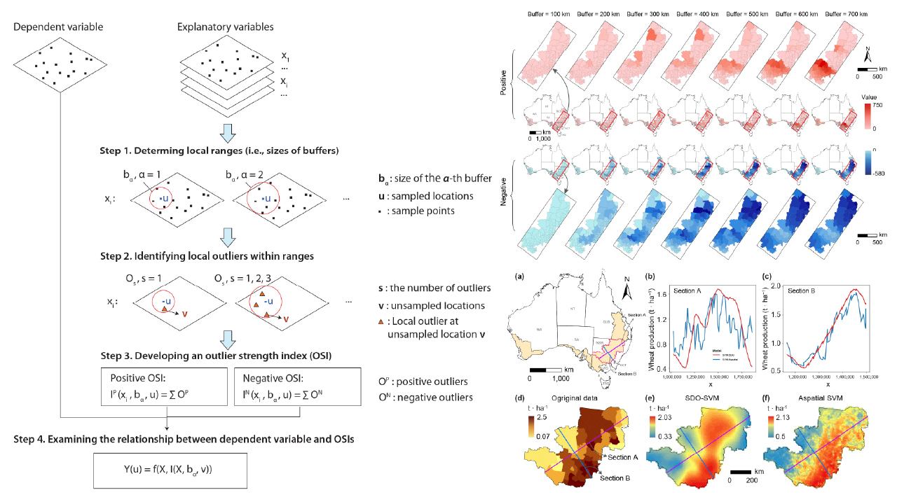

Journal Article
Second-dimension outliers for spatial prediction
https://doi.org/10.1080/13658816.2025.2580414Abstract
This paper develops the concept of second-dimension outliers for spatial prediction and uses spatial outlier patterns to improve the interpretation of heterogeneity and prediction behavior in geographic data.
Figures
